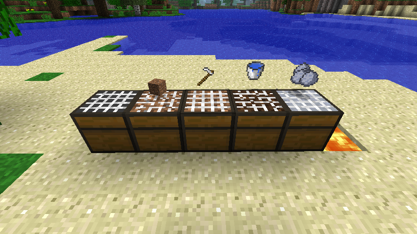
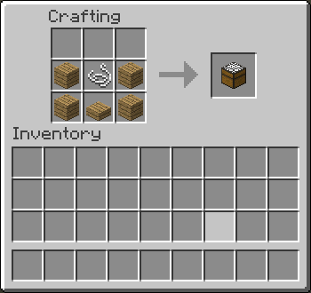

grep is your friend
Additionally, these tutorials will assume knowledge of Java. None of what we will do is very complicated, so if you don't know Java, check out one of the thousands of existing tutorials on it!
I just use vim and the shell for developing, but there is a directory in mcp (eclipse/) containing an eclipse project setup. I have not tried it, but I imagine it would work fairly smoothly.
If you are unfamiliar with the mod, it's purpose is to make clay a pseudo-renewable resource so building with clay and bricks is actually possible. The idea is that by combining dirt, water, tilling, heat, and time in a block (the sieve), you can create clay balls.
You start by adding dirt to an empty sieve. The sieve is then "sifted" using a hoe, and then has water poured on it. The resulting block is left to sit for in some source of hear (either the sun, fire, or lava), and after a while will harden into clay!
This is our goal:

For more information, see the mod's page.
We use mod_ClaySieve. Here is what we start out with in this file:
package net.minecraft.src;
public class mod_ClaySieve extends BaseMod {
public mod_ClaySieve() {
}
public String Version() {
return "0.1";
}
}
mod_ClaySieve extends BaseMod, an abstract class added by Modloader. All Modloader mods must extend it. Version() is a method that returns a version string for the mod, it is abstract in BaseMod so we must provide an implementation. We also have a nullary constructor, this is what Modloader will call to run our initialization code.
This is actually already a functioning mod, though it won't do anything beside
a message to the console saying it was loaded.
package net.minecraft.src;
import java.util.Random;
public class BlockClaySieve extends Block {
public int textures[];
public BlockClaySieve(int id, String name, int[] textures) {
super(id, Material.wood);
this.textures = textures;
/* vanilla calls */
setBlockName(name); // this is required
setHardness(2.5F); // these two are not
setTickOnLoad(true);
/* modloader calls */
ModLoader.RegisterBlock(this); // this is required
ModLoader.AddName(this, name); // this is not (but is highly recommended)
}
}
There's a lot to go through here.
BlockClaySieve extends Block, which is the superclass of all blocks in the game. Block has a two argument constructor, taking a blockID (which must be unique!), and a "Material". The material sets some default things like mining sounds, our sieve is going to be wooden so we use "wood". See Materials.java for the full list.
We also pass our constructor an array of ints that we will use for texturing the block. Don't worry about this for now. We also include a String name.
We import Random because we will use it later.
Now to explain the two sets of function calls in the constructor. The first are vanilla calls. "setBlockName" does something internally with localizations, it doesn't matter what you give it as long as it is unique. "setHardness" controls how hard the block is to mine. We set it to 2.5, the same as a chest. (You can see this information in Block.java, where all vanilla blocks are created). "setTickOnLoad" tells the game that this block should receive updates, as opposed to something like stone which is inert.
There are a couple things worth noting. One, these calls do not have to be made here. They could easily have been in mod_ClaySieve or anywhere else for that matter. We put them here because it's a bit neater. Second, these calls follow the method-chaining pattern. We could rewrite the statements as:
setHardness(2.5F).setBlockName(name).setTickOnLoad(true)
Now for the Modloader calls. "RegisterBlock" is a required call that lets Modloader and the Game know about our block. "AddName" sets the block name, what will appear on the tooltip (what "setName" would seem to do but in fact does not).
First, we add the following constants:
public static final int tick_rate = 300;
public static final int drop_min = 3;
public static final int drop_max = 8;
The first constant will be used to control how long it takes for the clay sieve to transition from the "wet" stage to the finished "dry" stage. The second two determine how many clay balls the sieve will produce (between three and eight).
We also add some constants for the various states the sieve can be in. We're going to store the sieve state using a metadata value. This is the best approach for storing a (very) small amount of data on a block, as it has no performance overhead. If you do need to store more, you should use a TileEntity. Metadata can take values from zero to fifteen (half a byte of storage).
public static final int meta_empty = 0;
public static final int meta_filled = 1;
public static final int meta_sifted = 2;
public static final int meta_wet = 3;
public static final int meta_dry = 4;
The sieve has five states so we define these five constants.
We also define this helper method:
public void set_meta(World world, int x, int y, int z, int meta) {
world.setBlockAndMetadataWithNotify(x, y, z, blockID, meta);
}
All this does is set the metadata at (x, y, z). "blockID" is a field of Block. There is a method "setBlockMetadataWithNotify()", that doesn't take a blockID, but it does not trigger a visual update for some reason. The "WithNotify" part of the method means that adjacent blocks will have a method called to tell them that their neighbor has changed. Generally in block update code like this you want to notify. If you're generating a structure or something, you probably don't.
Here's a brief list of methods that manipulate blocks in the world:
setBlock(int x, int y, int z, int blockId)
setBlockMetadata(int x, int y, int z, int meta)
setBlockAndMetadata(int x, int y, int z, int blockId, int meta)
setBlockWithNotify(int x, int y, int z, int blockId)
setBlockMetadataWithNotify(int x, int y, int z, int meta)
setBlockAndMetadataWithNotify(int x, int y, int z, int blockId, int meta)
We're going to use the chest side texture for the side of the sieve, and planks for the bottom. We also need to add five new textures for the various states the sieve can be in. These will be used on the top of the sieve.
It would be a nightmare if you had to edit the terrain.png for every mod you installed, so Modloader provides a method for "overriding" a texture:
ModLoader.addOverride(String dest, String path)
The first argument is the texture file to override, and the second is the path to our new texture (a 16x16 png file). The method returns an integer representing the texture index where your texture has been patched in.
It is worth noting that texture space is somewhat limited, there are only 256 spots and quite a few are already used by vanilla. In later tutorials we will cover how to get around this limit.
With all this in mind, we return to mod_ClaySieve. We change it to be the following:
package net.minecraft.src;
public class mod_ClaySieve extends BaseMod {
public static final int claySieveID = 204;
public static BlockClaySieve claySieve;
public mod_ClaySieve() {
final int tex[] = {
final int tex[] = {
ModLoader.addOverride("/terrain.png", "/claysieve/sieve_empty.png"),
ModLoader.addOverride("/terrain.png", "/claysieve/sieve_filled.png"),
ModLoader.addOverride("/terrain.png", "/claysieve/sieve_sifted.png"),
ModLoader.addOverride("/terrain.png", "/claysieve/sieve_wet.png"),
ModLoader.addOverride("/terrain.png", "/claysieve/sieve_dry.png"),
};
};
claySieve = new BlockClaySieve(claySieveID, "Clay Sieve", tex);
}
public String Version() {
return "0.1";
}
}
We add a constant for the blockID the sieve will use, along with an easily accessible public static for the clay sieve block. Until now we had never actually constructed an instance of it! We create an array with the four textures we will use, and pass it to BlockClaySieve constructor.
Note that in the addOverride() call, we prefix paths with a "/" character. This is important! If you omit the slash Modloader will not find the textures!
Now we need to tell our block how to use the textures we just gave it. By default, a block will render all six sides using its "blockIndexInTexture" field. This won't do for the clay sieve, so we add the following method to BlockClaySieve:
@Override
public int getBlockTextureFromSideAndMetadata(int side, int meta) {
if (side == 0) {
return Block.planks.blockIndexInTexture;
} else if (side == 1) {
return textures[meta];
}
return Block.chest.blockIndexInTexture;
}
This is an override of a method in Block that allows to set the texture based on side and metadata. There are a number of similar methods for texturing that you can find in Block, they might fit your needs better!
This method is fairly self explanatory. For reference, "0" is the bottom of a block, "1" is the top, and 2-5 are the vertical sides.
@Override
public boolean blockActivated(World world, int x, int y, int z, EntityPlayer player) {
final ItemStack item = player.inventory.getCurrentItem();
final int meta = world.getBlockMetadata(x, y, z);
if (meta == meta_dry) {
harvest_sieve(world, x, y, z);
set_meta(world, x, y, z, meta_empty);
return true;
}
if (item == null) {
return true;
}
switch (meta) {
case meta_empty:
if (item.itemID == Block.dirt.blockID) {
set_meta(world, x, y, z, meta_filled);
item.stackSize--;
}
break;
case meta_filled:
if (Item.itemsList[item.itemID] instanceof ItemHoe) {
set_meta(world, x, y, z, meta_sifted);
item.damageItem(1, player);
}
break;
case meta_sifted:
if (item.itemID == Item.bucketWater.shiftedIndex) {
set_meta(world, x, y, z, meta_wet);
item.itemID = Item.bucketEmpty.shiftedIndex;
}
break;
}
return true;
}
It's less complicated than it looks.
First, we grab the block metadata at (x, y, z), along with an "ItemStack" of what the player is holding. An ItemStack is a specific instance of an item, with durability and quantity. In contrast, and "Item" is like a block, it's an abstract description of a certain kind of item.
Side note, "Item" is organized very simillary to "Block". All vanilla items are defined inside of it. Like blocks have blockID's, items have "shiftedIndex"'s. They both use the same texture index format (though items have a different texture atlas).
Next, we check if the sieve is "dry" and thus finished. If it is, we call a method harvest_sieve(), set the metadata back to the empty state, and return.
Here's harvest_sieve:
public void harvest_sieve(World world, int x, int y, int z) {
if(world.multiplayerWorld) return;
final Random rand = world.rand;
final int amount = drop_min + rand.nextInt(drop_max - drop_min + 1);
ItemStack drop = new ItemStack(Item.clay, amount);
float f = 0.7F;
double d = (double) (rand.nextFloat() * f + 1.0F - f) * 0.5D + x;
double d1 = (double) (rand.nextFloat() * f + 1.0F - f) * 0.5D + y + 0.5;
double d2 = (double) (rand.nextFloat() * f + 1.0F - f) * 0.5D + z;
EntityItem entityitem = new EntityItem(world, d, d1, d2, drop);
entityitem.delayBeforeCanPickup = 10;
world.entityJoinedWorld(entityitem);
}
This was all modified from some code in Block. You can get quite far just by copying and modifying existing code. Essentially we compute a random position near the top of the sieve block, create an ItemStack for the drop, and combine them into an "EntityItem". This is the class for dropped items. Then we just have to add it to the world, and our sieve works! Well at least somewhat.
Note that if the world is multiplayer, we don't do anything. This is important, if we don't do this check we can end up with confusing client side glitches.
Back to the main method.
if (item == null) {
return true;
}
switch (meta) {
case meta_empty:
if (item.itemID == Block.dirt.blockID) {
set_meta(world, x, y, z, meta_filled);
item.stackSize--;
}
break;
case meta_filled:
if (Item.itemsList[item.itemID] instanceof ItemHoe) {
set_meta(world, x, y, z, meta_sifted);
item.damageItem(1, player);
}
break;
case meta_sifted:
if (item.itemID == Item.bucketWater.shiftedIndex) {
set_meta(world, x, y, z, meta_wet);
item.itemID = Item.bucketEmpty.shiftedIndex;
}
break;
}
return true;
Any other interaction is going to require using an item on the sieve, so if the player wasn't holding one we just exit now.
If the player was holding something, we do a switch on the metadata to see what we should do. All the cases should be pretty self explanatory, if the sieve is empty and the player is holding dirt, we set the sieve to be filled with dirt. Don't forget to decrement the itemstack size! If the player is holding a hoe and the sieve is in the right state, we set the sieve to be sifted. "damageItem(int damage)" removed durability from a tool. If the item cannot be damaged, it will not do anything. If the player clicked a sifted sieve with a water bucket, we set the sieve to be wet and change the item to an empty bucket.
That's all for this method! The clay sieve now has proper player interactions.
Since we called "setTickOnLoad()", the game is going to periodically call an update method on this block. It will give us a World object, an (x, y, z) coordinate pair, and a Random. The method called is "updateTick()", and we overload it as such:
@Override
public void updateTick(World world, int x, int y, int z, Random random) {
final int meta = world.getBlockMetadata(x, y, z);
if (meta != meta_wet) {
return;
}
int mul = dry_rate(world, x, y, z);
if (random.nextInt(tick_rate) < mul) {
set_meta(world, x, y, z, meta_dry);
}
}
Lets go through this. First off, since the only time we want block to do something is if it is in the "wet" stage, we check the metadata and exit early if it is in a different stage. Otherwise, we compute a dubiously-named "multiplier" value, and check if a random number is less than it. If it is, then we set the block to the "dry" state. Pretty simple, all in all.
Here's the code for dry_rate():
public int dry_rate(World world, int x, int y, int z) {
int rate = world.canBlockSeeTheSky(x, y, z) ? 1 : 0;
if (block_near(world, x, y, z, Block.fire.blockID)) {
rate = 2;
}
if (block_near(world, x, y, z, Block.lavaMoving.blockID)) {
rate = 3;
}
if (block_near(world, x, y, z, Block.lavaStill.blockID)) {
rate = 3;
}
return rate;
}
public boolean block_near(World world, int x, int y, int z, int id) {
for (int i = -1; i < 2; ++i)
for (int k = -1; k < 1; ++k)
for (int j = -1; j < 2; ++j)
if (world.getBlockId(x + i, y + k, z + j) == id)
return true;
return false;
}
block_near() checks if a block with the given id is within a 3x3 square of (x, y, z), either at the same level or one down. dry_rate() just finds the hottest source of heat near (x, y, z), if there is one. (If there isn't then the mul value is zero and nextInt() will never produce a value beneath it, meaning the sieve will never dry).
With this code added, the sieve will now dry at (approximately) the rate we set earlier, with faster drying occurring when stronger sources of heat are used.
Shaped recipes are those with a defined shape, eg, tools. Most recipes are shaped. Shapeless recipes simply require all the ingredients to be in the crafting grid, eg, dying wool. Furnace recipes are those used in smelting.
We will be adding a shaped recipe for the clay sieve through Modloader's function "AddRecipe". "AddRecipe" takes in two arguments, and ItemStack for the output and an Object[] describing the recipe. The Object array is formatted as follows:
{ RecipeLine1, RecipeLine2, ... RecipeLineN,
Character.valueOf(Ingredient1), Ingredient1,
Character.valueOf(Ingredient2), Ingredient2,
...
Character.valueOf(IngredientN), IngredientN, }
This looks fairly nonsensical so we'll just give an example and try to explain that. We add this code to the constructor of mod_ClaySieve:
ModLoader.AddRecipe(new ItemStack(claySieve),
new Object[] {
"WSW",
"WRW",
Character.valueOf('W'), Block.planks,
Character.valueOf('R'), Block.stairSingle,
Character.valueOf('S'), Item.silk });
So the first argument is just an ItemStack of a clay sieve, not too exciting. The second argument is where things get weird.
We start off by "drawing" each row of the recipe out as a string. The first argument is the top row, the second the next row down, and so on. Each character in the string represents an item in the crafting grid. So in total, this recipe uses six items in a 2x3 rectangle. A space character represents an empty slot in the crafting grid (though we don't use any here).
Next, we have to describe what each character in the string is supposed to be. We do this by specifying a Character (not a char, as this is an array of Object) then a block or item. For example, 'W' is a block of planks, while 'S' is a piece of String (called "silk" in the code).
Note that ALL of the second section is one argument, wrapped into an array of Object.
It's a bit confusing at first, but it's actually a very easy and flexible way to define recipes.
This is what the recipe looks like.

This mod should be fully compatible with any other mods, as we did not edit any vanilla code! The only potential conflict is the blockID we used. If you want, you can add configuration files so that blockID can be changed in the event of a conflict, but I hate writing configuration files so we did not do this in the tutorial.
Let me know if you have questions, comments, or suggestions!